概念 / 效果图 · 非正式小样 · 停交互实现正式主链：https://zhousong-xd.github.io/demo001/
这桌不能坐 · 表现重设计概念板
T-060/061 · 固定一桌 · 小而搞小动作梗优先 · 凡动 · 人数 · 椅型
1. 总览（少字）
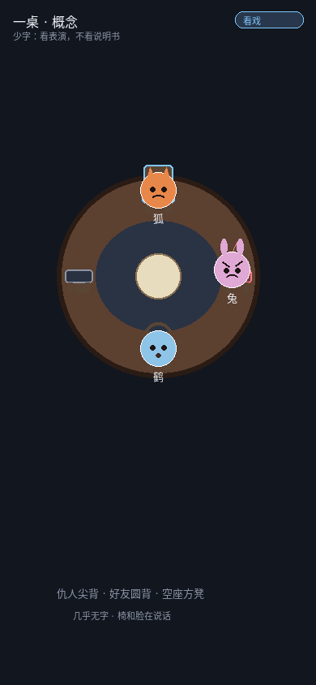
01 椅+脸说话，几乎无说明书
★ 小而搞（人类纠正优先看这里）
短、好笑、一看就懂。不是大场面说明书。
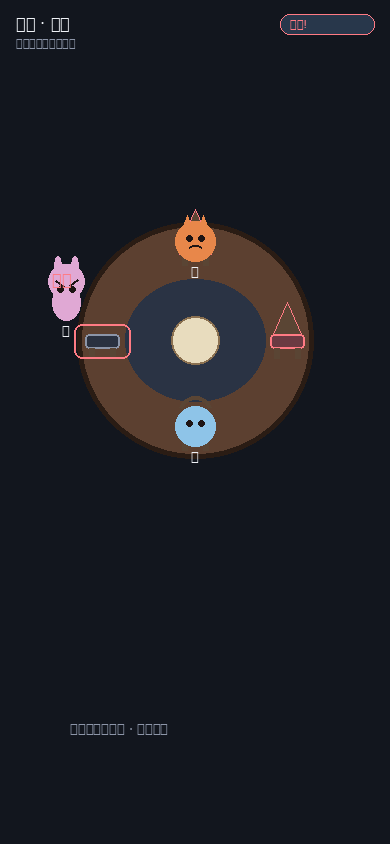
10 见仇人：站起来不坐
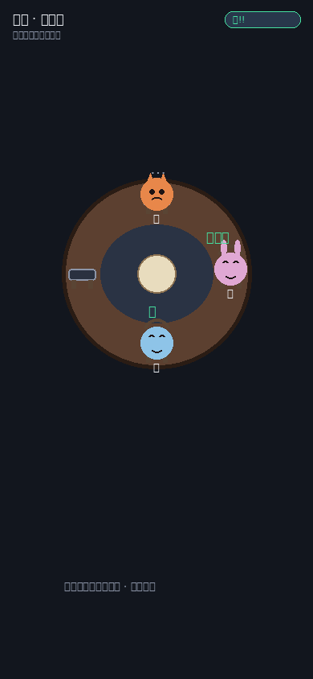
11 好友招过火：旁人无语
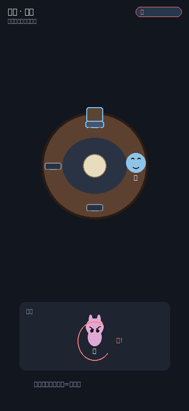
12 被挤开：候客区气转圈
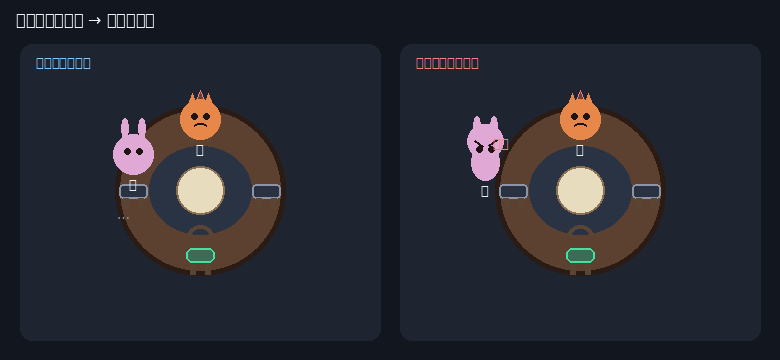
13 一眼对比：想坐 → 见仇人拒坐
2. 凡动必有戏（拿起 → 悬停 → 落下 → 挤开）
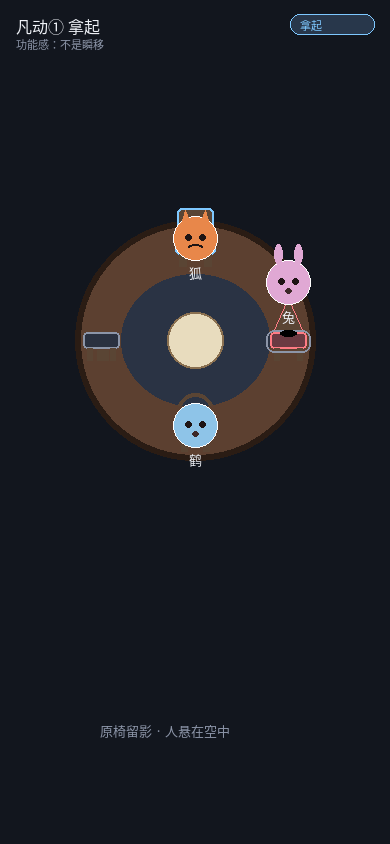
02 拿起：人悬空 · 椅留影
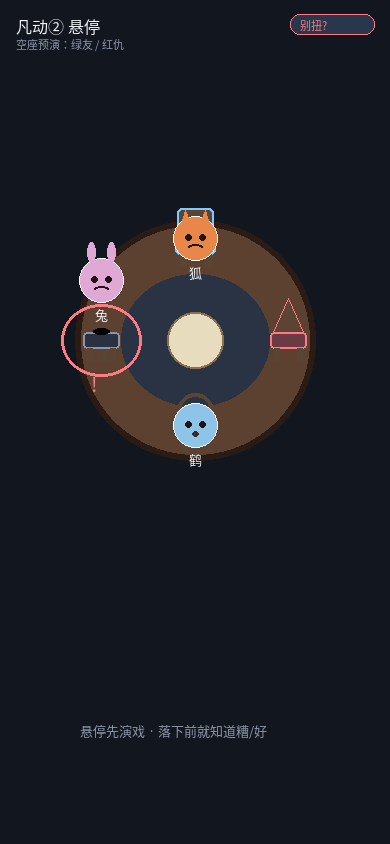
03 悬停：红/绿预演
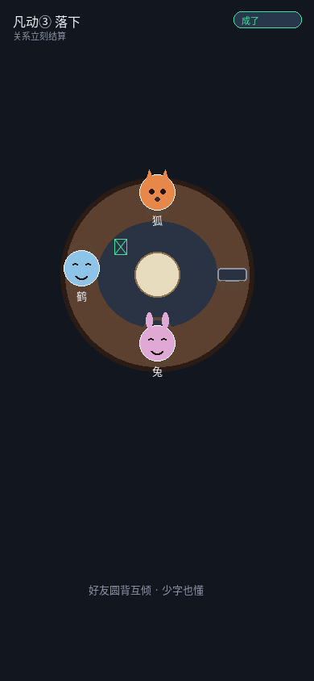
04 落下：关系立刻结算
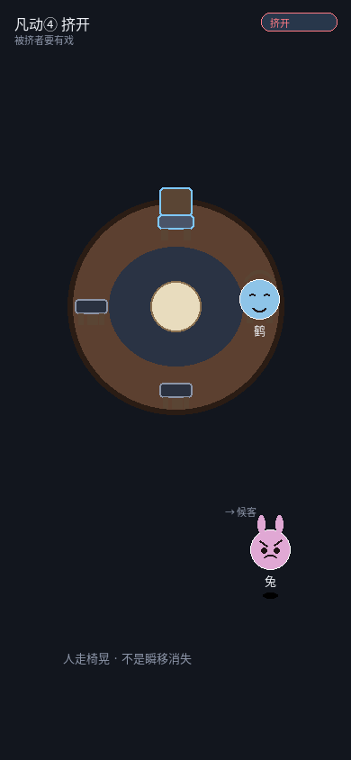
05 挤开：人走椅晃
3. 人数戏对比
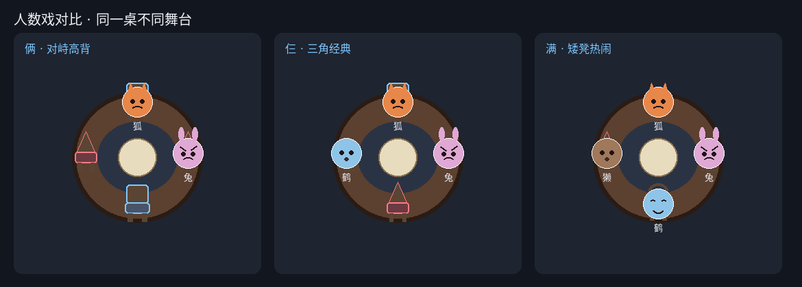
06 俩对峙高背 · 仨三角 · 满矮凳热闹
4. 椅随关系（≥3 种）
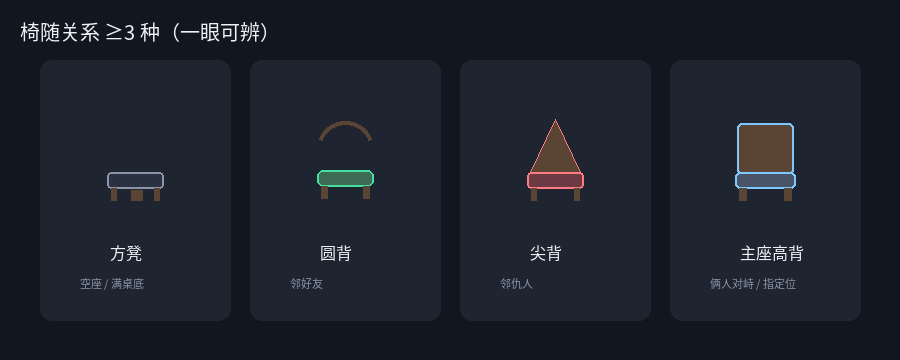
07 方凳 / 圆背 / 尖背 / 主座高背
5. 仇友意外效果
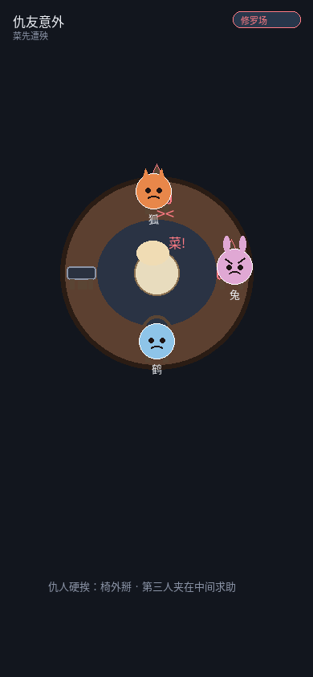
08 仇人硬挨：修罗场 · 菜先遭殃
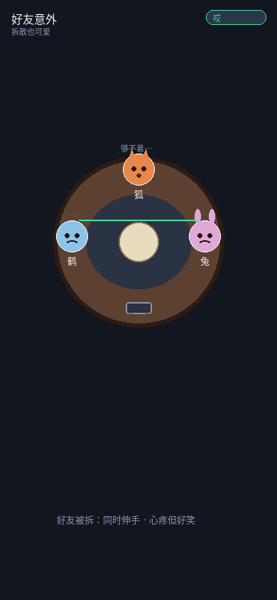
09 好友被拆：够不着
本地路径：banquet-pilot/candidates/presentation-sample/concept/ · 说明见 README.md · 设计表见上级 设计表.md